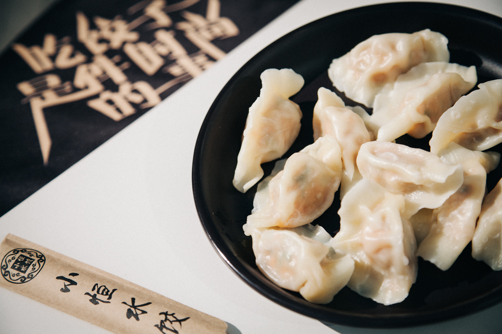
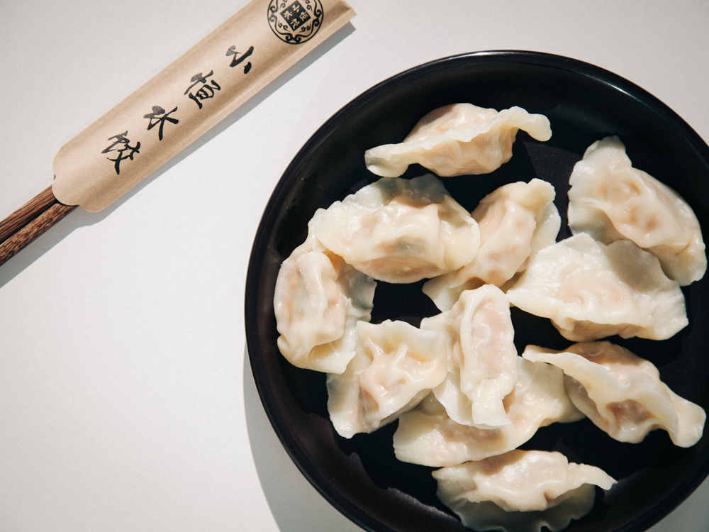
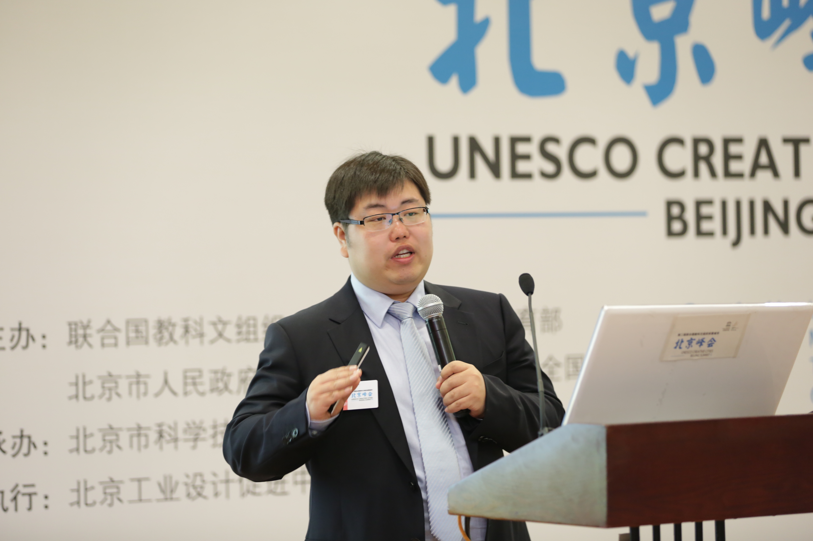
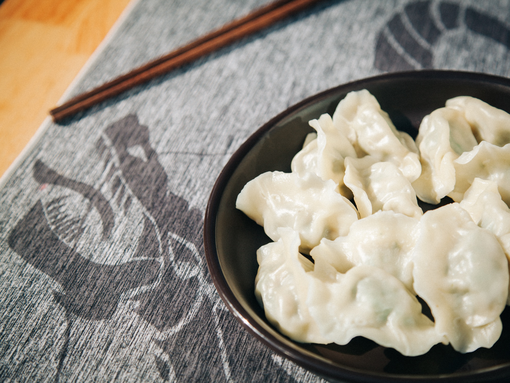

深夜加完班，李恒跟他的男助理说，累了吧？
累了。
咱放松一下，看电影儿去。
不是应该回家睡觉吗？“变态是吧，嘿嘿，看电影。”他笑得贼兮兮的。
助理曾经因为跟着这样的主儿，很怀疑自己身体虚弱。
其实李恒有点儿胖。肚子圆圆的，主要是睡眠少，就胖，不帅了。
跟他的饺子一样，肉厚，有味儿。

开个饺子馆，有点家的味道，精肉，鲜料，调味，跟自家饺子一样实在。李恒河北人，传统家庭长大，初衷就是这样想。
还没开饺子馆那会儿他就已经是大款了，刚卖了第一家创业公司，由于以前玩儿吉他，还开着一家音乐工作室，兜里鼓鼓的，吃货本性，肚子也鼓鼓的。李恒没事儿就喜欢瞎转悠，搜罗苍蝇馆子民间美食，真给他发现一家中餐馆，去的频率高到跟那里的老板称兄道弟，哭爹骂娘。

有一天，中餐馆的哥们儿愁眉苦脸，一聊，馆子经营得不太好，手艺不差就是赚不了钱。李恒二话没说，掏了10多万，换了个CBD的店面，经常出点子吸人流量。酒香还是怕巷子深，这哥们儿手艺在那儿，馆子果然活了。第二年挣了6、70万，哥们儿说，兄弟，我要给你分红，你是大股东啊，得给你50万。李恒才知道，原来自己做了回天使啊。

大家叫这哥们儿杜哥，后来成了“小恒水饺”的合伙人，学历不高，但李恒信得过。后来杜哥问李恒，你当初干嘛给我这么多钱？你不怕我不还？喜欢听《浩瀚》（张杰）的李恒，说就是信任，我觉得你人好。《浩瀚》里面有句歌词：败了也要逞英雄，不怕世人笑我疯。

这种江湖情谊的事儿李恒干过不止一次。不是没栽过跟头上过贼船。
他大三的时候是2007年，那会儿，只要是个公司就流行建网站，没钱就找大学生。李恒就做销售渠道，帮一些计算机小伙伴们拉活儿，一群人赚了13万，尝到了甜头。临到了毕业，大家要把这事儿做成公司，找李恒投20-30万进去，找活儿，写代码，分钱，多爽。李恒犹豫，一个校园组织真进了市场，像一个卵还没长硬外壳，只有被石头碾死的份儿。最后李恒抹不开面儿，骑虎难下了，拿了20多万出来建公司：我就要告诉你们，这东西成不了。
其实成事也不难，辞掉原始的小伙伴就OK。李恒不辞人死撑着，维持了一年多，亏了不少钱。最后大家才四散。

舍钱不舍人。一起打拼过的小伙伴不能丢，有点江湖道义的味道。
不过选择讲道义，可以叫一念执着，也可以叫嗅觉灵敏。
李恒从来都知道什么对自己最重要。高三那会儿开了个100多人规模的吉他班，教人弹吉他泡妞，耽误了学习，他复读了一年，因为他认为必须考上重本。
道义比文凭更重要。不过道义不像高三可以重来，要么毁，要么升。
小恒水饺融资的时候，青松资本的董占斌（懂饺子，山东人）说小恒水饺模式不错，还想尝尝饺子，李恒一听，有戏啊！大半夜着急忙慌地打包了水饺到董占斌家里，两个男人煮水饺喝啤酒看世界杯。第二天一大早，青松资本在几个小时内就决定投资，不过李恒却说要等等。等的是去了以色列考察创业团队的徐小平。
真格的徐小平在走之前，跟李恒说，我要投。所以李恒等着。
几个月以后徐小平回来了，说你真的一直等我？
对啊。
好，我投。
如今徐小平和李恒的关系也不错，帮着取了“小恒水饺”的名字。董占斌也真的觉得，小恒水饺肉厚味儿香很好吃，李恒虽然肉厚，但是有味儿也靠谱。

肉厚，要的是舍得放料，但是有味儿，不一定家家都能做出来。李恒在河北的水饺店，有个客人一下买了70斤生饺子，打算全家人从除夕吃到初八他们上班。这就是李恒要的效果——他们的公司叫北京思家餐饮。
做让人想家的饺子，要用“匠心”，为此他可以一天吃5顿饺子试味儿（虽然这绝B是一个吃货该做的）。越简单的食物，越考验意念和诚心。小恒水饺的Slogan是“吃饺子是件时尚的事”，这样的话，爱吃饺子的中国人越来越多，就跟美国人爱吃汉堡似的，成了一种外扩的文化。前有老干妈，后有庆丰包子，小恒水饺带上互联网基因的中央工厂、纯手工、垂直电商、冷链配送，想做中国饺子的名片。
最近，小恒水饺刚刚完成来自险峰华兴的一轮融资。
愿李恒更帅，水饺更好。